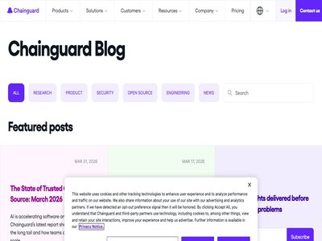

September 30, 2026 · 1 article

Infostealers highlight malware-as-a-service trend
September 30, 2026
Aurastealer, ACRStealer, and RemusStealer, a new potential LumaStealer variant, show MaaS in action. Here's what you need to know. (ReversingLabs Blog)
August 27, 2026 · 1 article

Boardroom Battles 2026: ASD’s Cyber Priorities & AI Risk
August 27, 2026
The Australian Signals Directorate’s 2026 board priorities and frontier AI guidance show why speed alone won’t stop AI-era cyber threats. (Huntress Blog)
August 26, 2026 · 51 articles

ICYMI: July 2026 @AWS Security
August 26, 2026
If you found time for a bit of vacation this summer, you might be in catch-up mode. Here’s a list to help: all the expert blog posts, new service capabilities, code samples, and... (AWS Security Blog)

Medical device firm Boston Scientific says cyberattack has disrupted shipment processes
August 26, 2026
The company released a statement and filed documents with the Securities and Exchange Commission (SEC) saying a cybersecurity incident was discovered on Tuesday. (The Record)
OpenAI: Agent behavior that led to Hugging Face intrusion formed in May
August 26, 2026
The company says the breach stemmed from a systemic failure of alignment and security, and has taken measures to prevent agents from independently orchestrating complex cyberatt... (CyberScoop)
Three 10.0 security flaws fixed across Ubiquiti’s UniFi line
August 26, 2026
The communications product company disclosed 22 total Wednesday, all but one of which was rated “critical” at 9.0 or higher. The post Three 10.0 security flaws fixed across Ubiq... (CyberScoop)
Detecting multi-stage attacks on AWS: A guide to cross-service signal correlation
August 26, 2026
A single alert from one security service tells you something happened. Read that signal alongside activity from other services and your own business context, and you will know w... (AWS Security Blog)

Android Malware Hijacks Update System for Car Head Units
August 26, 2026
Threat actors behind a notorious click-fraud botnet have set their sights on vehicle infotainment modules and are abusing legitimate functionality to spread infections. (Dark Reading)

When AI infrastructure becomes the target: Securing gateways and control points
August 26, 2026
Microsoft Threat Intelligence examines attacks on exposed AI workloads, including LiteLLM gateway exploitation, credential harvesting, persistence, and cryptomining activity. Th... (Microsoft Security Blog)

FBI Disrupts China-Linked QTFY Infrastructure Used to Steal Data From U.S. Organizations
August 26, 2026
The U.S. Department of Justice (DoJ) on Wednesday announced the disruption of two hacking platforms named QScan and QTRouter operated by Chinese threat actors to target critical... (The Hacker News)
US takes down alleged Chinese hacking tools used against Federal Reserve, DOJ and Senate
August 26, 2026
The DOJ said it disrupted Chinese state-backed tools used to scan, infect and exploit IoT devices for attacks on federal agencies and multiple industries. (The Record)

Democratizing FinOps with Wiz: Driving Cost Attribution with the Wiz Service Catalog
August 26, 2026
How the Wiz Cloud Cost automates cost allocation to power developer-led cost optimization and connect cost to business value. (Wiz Blog)
Nimbus Manticore Expands Toolset With TWOSTROKE-Like Backdoor and SSH Tunneler
August 26, 2026
Cybersecurity researchers have discovered additional infrastructure and previously undocumented malware associated with Nimbus Manticore, an Iranian state-sponsored hacking grou... (The Hacker News)
Unpatched Kaltura mwEmbed Flaws Could Let Remote Attackers Read Files and Run Code
August 26, 2026
The CERT Coordination Center (CERT/CC) has disclosed two unpatched vulnerabilities in Kaltura's HTML5 video player library that allow a remote, unauthenticated attacker to read... (The Hacker News)
'NovaCookies' Kit Steals Microsoft 365 Sessions for $320 a Month
August 26, 2026
The adversary-in-the-middle (AitM) phishing service lowers the barrier to entry for actors to create attacks and steal more than just user credentials. (Dark Reading)

Hackers now exploit critical Gitea flaw in code injection attacks
August 26, 2026
Attackers are now exploiting a critical-severity vulnerability in the Gitea self-hosted Git service, according to the U.S. Cybersecurity and Infrastructure Security Agency (CISA... (BleepingComputer)

Meta adds three new features to keep WhatsApp accounts secure
August 26, 2026
Meta has added new security enhancements to WhatsApp, this time in the form of stronger two-step verification, additional information about calls from unknown numbers, and the a... (Help Net Security)

Operation Jackal: 58 Arrests Expose the Money Laundering Machine Behind Global Scams
August 26, 2026
INTERPOL’s Operation Jackal IV made 58 arrests and exposed global networks laundering money from scams, fraud and sextortion. INTERPOL announced that Operation Jackal IV, runnin... (Security Affairs)
Linux Foundation takes on TRACE, a hardware-backed runtime evidence specification for AI agents
August 26, 2026
The Linux Foundation announced the contribution of TRACE (Trust, Runtime Attestation and Compliance Evidence), from OPAQUE. Collaboratively developed by AMD, Intel, Microsoft, O... (Help Net Security)
Fake Apple Support AI Calls Target Stolen-Device Owners for Passcodes and 2FA Codes
August 26, 2026
Cybersecurity researchers have disclosed details of a phishing-as-a-service (PhaaS) platform built to strip Apple's Activation Lock from stolen devices, using rented AI voice ag... (The Hacker News)

Simplify your resilience testing strategy with Google Cloud Fault Injection Testing
August 26, 2026
When databases fail and network paths falter, you still need your mission-critical cloud services to stay online. Yet guaranteeing high availability has become increasingly diff... (Google Cloud Blog)
Iran-linked hackers expand infrastructure across Europe and Middle East, report says
August 26, 2026
Researchers said they identified servers and domains associated with several countries in Europe and the Middle East, potentially pointing to a broader targeting profile for an... (The Record)

AI Speeds Up Malware Development, Not Its Success Rate: Analysis
August 26, 2026
Palo Alto Networks Unit 42 analyzed 405 AI-linked malware samples and found only 12 reached production endpoints. The post AI Speeds Up Malware Development, Not Its Success Rate... (SecurityWeek)
The State of Cloud Risk 2026: Most Security Findings Aren’t Real Attacker Opportunities
August 26, 2026
Wiz Research telemetry reveals why the majority of high-severity findings lack a path to compromise (Wiz Blog)

Beyond Patching: What IT Teams Need to Know About Unfixable Exposures
August 26, 2026
Executive Summary Most IT teams still operate under a false binary: patch or accept risk. That assumption creates unnecessary operational pressure. Patchless remediation is real... (Qualys Blog)
Snowflake ends service-account passwords. Now comes the hard part
August 26, 2026
Snowflake is ending password authentication for legacy service accounts, forcing organizations to migrate them to passwordless methods. Token Security explains why the harder ch... (BleepingComputer)

Update Chrome before you browse again
August 26, 2026
Chrome’s latest update fixes 327 security vulnerabilities, including some that malicious websites could exploit as soon as you visit them. (Malwarebytes Labs)

Four in Five AI Tools Run with No IT Oversight, New Research Finds
August 26, 2026
Reco report reveals growing shadow AI problem and surge in vulnerability disclosures (Infosecurity Magazine)
Adobe and Nvidia Patch Dozens of Vulnerabilities
August 26, 2026
Adobe and Nvidia each published several advisories, including ones that address critical vulnerabilities in their products. The post Adobe and Nvidia Patch Dozens of Vulnerabili... (SecurityWeek)

Spyware for Babies
August 26, 2026
The New York Times has a long article ( alt link ) on surveillance systems aimed at babies. They are increasingly using AI. Nanit and its rivals want to own 24/7 health tracking... (Schneier on Security)
Imagine the SOC Without a Queue: From Alert Backlog to AI Hypothesis Engine
August 26, 2026
The SOC we've always known was built around a model that guarantees most of the alert queue will never receive analyst review. There's never time. In a traditional SOC, the typi... (The Hacker News)
CISA: Over 100 Internet-Exposed Water Systems Targeted in July Cyberattacks
August 26, 2026
The agency has released guidance on reducing internet exposure in the wake of the recent Iran-linked hacker attacks. The post CISA: Over 100 Internet-Exposed Water Systems Targe... (SecurityWeek)
The MFA Identity Trap: When Authentication Creates a False Sense of Security
August 26, 2026
Organizations must distinguish identity verification, authentication and threat detection, or risk successfully authenticating the attackers they are trying to stop. The post Th... (SecurityWeek)

VMs won't contain cyber-capable agents
August 26, 2026
As part of Patch the Planet , we received preview access to GPT 5.6-Cyber with a simple task: evaluate its cyber capabilities. Recent events inspired me to give it a challenge t... (Trail of Bits Blog)
RightCrowd Pass unifies mobile, physical, and biometric credentials
August 26, 2026
RightCrowd announced RightCrowd Pass, a credentialing solution that issues and manages mobile, physical and biometric access credentials from a single platform. Many large enter... (Help Net Security)
Claude Opus 4.6 Bypasses Gym Booking Limit, Cancels Other Users' Reservations in Tests
August 26, 2026
Aikido Security has published research that recreates the Australian gym-booking incident in a synthetic environment, finding that Claude Opus 4.6, running on the OpenClaw agent... (The Hacker News)
Bogus recruiters go after high-value corporate credentials on mobile
August 26, 2026
Scammers posing as HR staff at well-known companies are running interview scheduling scams that end with a stolen corporate password, according to Zimperium. Attackers are using... (Help Net Security)

Choose your fighter: Balancing competing requirements to select models for your AI SOC
August 26, 2026
Selecting a model for your security operations center (SOC) and digital forensics and incident response (DFIR) tasks is important, but selecting the best one is more involved th... (Cisco Talos)
Chrome 152 Patches Over 300 Vulnerabilities
August 26, 2026
Most of the flaws were discovered by Google using AI, but researchers are still discovering high-value Chrome vulnerabilities. The post Chrome 152 Patches Over 300 Vulnerabiliti... (SecurityWeek)
OpenAI Bans Russian ChatGPT Accounts Used to Run Influence Operation
August 26, 2026
OpenAI on Tuesday said it banned a cluster of Russian ChatGPT accounts that used VPNs to bypass access restrictions and run an influence operation, which relied on its artificia... (The Hacker News)
CISA Warns of Exploited Gitea Vulnerability
August 26, 2026
CVE-2026-60004 is a remote code execution vulnerability patched by Gitea developers in late July with the release of version 1.27.1. The post CISA Warns of Exploited Gitea Vulne... (SecurityWeek)
88 ID Verification Breaches Show the Cost of Collecting Identity Data
August 26, 2026
88 ID-verification breaches exposed billions of records, highlighting the growing risks of collecting sensitive identity and biometric data. A new report from Mysterium VPN comp... (Security Affairs)
Nigeria Looks to Sovereign Cloud for Cyber, National Security
August 26, 2026
The West African nation launched financing, procurement, and infrastructure policies to boost its sovereign cloud initiative and increase domestic technical knowledge. (Dark Reading)
Beware of fake Indeed interview apps used to install spyware
August 26, 2026
Scammers are posing as employers on Indeed to trick job seekers into installing fake Android interview apps that deliver malware. (Malwarebytes Labs)
Sensitive Information Exposed in Nutex Health Data Breach
August 26, 2026
Nutex Health has informed the SEC that it recently detected unauthorized access and data exfiltration. The post Sensitive Information Exposed in Nutex Health Data Breach appeare... (SecurityWeek)
Newly SLEEPWALKER Backdoor Waits for One Crafted Packet, Then Runs Its Own Bytecode
August 26, 2026
An independent malware researcher has documented a previously unreported Windows backdoor, dubbed SLEEPWALKER, that stays inert in memory until a specifically crafted network pa... (The Hacker News)
Production data in testing is still common, and Tricentis’ CISO wants it gone
August 26, 2026
In this Help Net Security interview, Erika Dean, CISO at Tricentis, talks about keeping production data out of test environments and why she thinks the alternatives are good eno... (Help Net Security)
AI vulnerability discovery scores the highest impact of 20 emerging risks
August 26, 2026
Risk managers, auditors and senior executives at 316 companies spent April and May ranking 20 threats they have not yet felt. AI discovery of cyber vulnerabilities came back fir... (Help Net Security)
Hottest cybersecurity open-source tools of the month: August 2026
August 26, 2026
Presented here is a curated selection of noteworthy open-source cybersecurity solutions that have drawn recognition for their ability to enhance security postures across diverse... (Help Net Security)

Risky Bulletin: Russia starts blocking DoH and DoT
August 26, 2026
In other news: NoName057 leaks data on Spanish police and military; China and South Korea detain vishing gang; AI malware is not that common. (Risky Business News)

ISC Stormcast For Wednesday, August 26th, 2026 https://isc.sans.edu/podcastdetail/10068, (Wed, Aug 26th)
August 26, 2026
(SANS ISC)

Kubernetes 1.37 - New security features
August 26, 2026
Here are the security implications of Kubernetes 1.37, including new security features to mount volumes, authentication by default on webhooks, and more. (Sysdig Blog)

Recorded Future Launches AI Alert Filtering
August 26, 2026
AI Alert Filtering is now available. Powered by Recorded Future AI, it automates the first pass of filtering Alerts by relevance so analysts prioritize faster while keeping cont... (Recorded Future)
August 25, 2026 · 47 articles
Two CVSS 9.8 Auth Bypasses in miniOrange SAML WordPress Plugin Were Exploited Before Any Database Even Listed the Paid Editions as Vulnerable
August 25, 2026
Two CVSS 9.8 miniOrange SAML WordPress plugin auth bypasses were exploited while paid editions never appeared in any vulnerability database. Manual patch required. Two critical... (Security Affairs)
Fake Minecraft Clients Deliver WeedHack Malware Despite Infrastructure Takedown
August 25, 2026
A threat actor keeps spreading the WeedHack malware to Minecraft players despite its original infrastructure taken down in July (Infosecurity Magazine)
Hackers abuse npm mirrors to host phishing redirect pages
August 25, 2026
Threat actors are abusing npm and its mirrors to host malicious HTML pages that impersonate Cloudflare CAPTCHAs to redirect visitors to attacker-controlled websites. [...] (BleepingComputer)
Hackers breached over 270 Zimbra servers in ongoing attacks
August 25, 2026
Threat actors have already compromised over 270 Zimbra instances in remote code execution attacks targeting a high-severity Zimbra Collaboration Suite (ZCS) vulnerability. [...] (BleepingComputer)

Crooks push Mac malware through fake OpenAI Codex ads
August 25, 2026
Sponsored search results lead developers straight into a ClickFix malware trap (The Register - Security)
Finding Nemo(Claw): Networking Issue Allows for LLM Poisoning in OpenClaw
August 25, 2026
Attackers can exploit a security bug in NVIDIA's tool to gain unauthenticated access to the local model server through the Ollama API, paving the way for persistent AI agent cor... (Dark Reading)
Australia Warns of Active Exploitation of Critical TeamCity Server Flaw
August 25, 2026
Australian officials are urging TeamCity customers to patch an actively exploited critical flaw, which follows a similar warning from the US government (Infosecurity Magazine)
CISA slaps its tightest three-day patching deadline on perfect-10 Oracle flaw
August 25, 2026
Disclosed in January and honeypots buzzed soon after, CISA says it’s finally time for the USG to plug the gap (The Register - Security)

Agentic AI Security: Credentials and Permissions Define the Blast Radius
August 25, 2026
Prompt injection can't be patched away. Three 2026 agentic AI incidents show that credentials and permissions decide the damage. (GitGuardian Blog)
Fast Track ISM-ready cloud environments and IRAP Assessments with Landing Zone Accelerator on AWS
August 25, 2026
This post announces the availability of a new independent assessment report available on AWS Artifact analyzing how Landing Zone Accelerator on AWS (LZA) can automatically deplo... (AWS Security Blog)
Hidden Prompts Trick AI Into False Email Summaries
August 25, 2026
With some simple HTML that's invisible to users, attackers can manipulate AI-powered email summarizers into producing malicious information. (Dark Reading)
The GTA VI leaks are breaking the internet. Security researchers have seen this before.
August 25, 2026
A memecoin, a manifesto, and a week of daily leaks - but to researchers, it's a familiar extortion playbook with an unusually large audience. The post The GTA VI leaks are break... (CyberScoop)

CVE-2026-78379 - Consent bypass in Strands Agents Tools python_repl tool
August 25, 2026
Bulletin ID: 2026-089-AWS Scope: AWS Content Type: Important (requires attention) Publication Date: 08/25/2026 12:00 PM PDT Description: Strands Agents is an open-source Python... (AWS Security Bulletins)
The patch window is collapsing: Why security needs a new control plane
August 25, 2026
Organizations need protection that operates in the gap between discovery and remediation. The post The patch window is collapsing: Why security needs a new control plane appeare... (Microsoft Security Blog)
What Good Identity Hardening Looks Like
August 25, 2026
MFA is just the starting line. Learn what mature identity hardening actually looks like, from closing MFA exceptions to catching drift before attackers do. (Huntress Blog)
Norway ’s Digital Government Infrastructure Hit by a new DDoS Attack
August 25, 2026
Norway ’s shared government infrastructure suffered a third DDoS attack, disrupting digital services but showing no signs of data compromise. Norway ‘s shared digital government... (Security Affairs)
Water sector passes, government sector fails attempts to spot and halt simulated CISA attack
August 25, 2026
Agency red-teamers got initial access to both organizations they tested, but one quickly isolated and shut down the attempts from going further. The post Water sector passes, go... (CyberScoop)
When the Algorithm Fires You: Uber Faces €825M Fine
August 25, 2026
Uber faces an €825M GDPR fine for automatically suspending drivers without human review, highlighting the risks of AI decisions affecting workers. The Dutch Data Protection Auth... (Security Affairs)
You could've applied all 1,449 Oracle patches and still been hit by this attack
August 25, 2026
Attackers now ready to exploit how things work, rather than just break them, says Oracle support expert (The Register - Security)
Agentic AI scales semiautonomous server attacks
August 25, 2026
UAT-10147 leveraged agentic AI to go beyond scripting to deliver a backdoor. The method highlights the need for agentic SOCs. (ReversingLabs Blog)

Integrate Aqua and VMware Tanzu to Control What Happens in Your Private Cloud
August 25, 2026
TL;DR Highly regulated industries like financial services often choose private cloud platforms such as VMware Tanzu Application Service (TAS) to retain greater control over thei... (Aqua Security Blog)
Obfuscating IP Addresses as Hostnames, (Tue, Aug 25th)
August 25, 2026
It is pretty obvious that hostnames can replace IP addresses. Pretty much any software accepting an IP address will also accept a hostname as an argument. Last week, I wrote abo... (SANS ISC)
Is Cyber Facing an Affordability Crisis?
August 25, 2026
As breach costs reach record highs and defense spending nears $240 billion, small businesses are dangerously exposed, threatening supply chain security. (Dark Reading)
ZeroTokens Phishing Platform Steers Attacks in Real Time
August 25, 2026
ZeroTokens gives phishing operators live control of victim sessions targeting 53 financial brands (Infosecurity Magazine)
Alice Raises $140M to Expand AI Model Defenses and Enterprise Guardrails
August 25, 2026
The company, previously known as ActiveFence, has raised a total of $280 million from investors. The post Alice Raises $140M to Expand AI Model Defenses and Enterprise Guardrail... (SecurityWeek)
From Fake Workers to Account Recovery: The Growing Identity Verification Risk
August 25, 2026
Attackers are increasingly targeting the processes used to establish or recover identity rather than attacking the login itself. Specops explains how stronger identity verificat... (BleepingComputer)
Ukraine to give Britain access to battlefield data to train AI
August 25, 2026
Ukraine will give Britain access to a vast trove of battlefield data collected during the war with Russia, allowing U.K. companies and researchers to use it to train and test ar... (The Record)
Citrix UniconOS dual boot turns Windows endpoints into their own recovery device
August 25, 2026
Citrix announced Citrix UniconOS dual boot, a new endpoint resiliency capability designed to help organizations recover access to work in minutes - without spare hardware, centr... (Help Net Security)
Fideo Lens reveals connections across identities, accounts and devices
August 25, 2026
Fideo Intelligence introduced Fideo Lens, an investigative intelligence platform that helps fraud and financial crime teams discover hidden relationships among identities, accou... (Help Net Security)
Hands-On Cyber-Physical Systems Training Returns to ICS Cybersecurity Conference
August 25, 2026
Hands-on Cyber Attack Methods course returns to SecurityWeek’s ICS Cybersecurity Conference, October 6-8 at the W Nashville. The post Hands-On Cyber-Physical Systems Training Re... (SecurityWeek)

Coding Agents Just Reopened Your Software Supply Chain Blind Spot
August 25, 2026
Most organizations spent years hardening their software supply chain. The model is familiar: dependencies flow through a controlled repository, policies determine what is allowe... (JFrog Security Research)
Grok fooled into stealing user chat, location data, and more
August 25, 2026
Researchers found that prompt injection attacks can hide malicious instructions in encrypted text to get them past AI guardrails. (Malwarebytes Labs)
Frontier AI: Vulnerability Management's Systemic Revolution
August 25, 2026
Vulnerability management has been a staple of security programs since the dawn of the cybersecurity discipline. The symbiotic relationship between vulnerability and patch manage... (The Hacker News)
State divergence enables unauthorized access
August 25, 2026
We found and reported a bug in Provenance Blockchain, a public proof-of-stake chain built on Cosmos SDK , that lets any user grant themselves admin control over marker accounts... (Trail of Bits Blog)
Black Hat State of Security Vendors
August 25, 2026
Andy Ellis has a roundup of the security vendors at Black Hat this year. Key Takeaways: We have entered into an AI world. While nearly half of booths didn’t directly mention AI... (Schneier on Security)

The State of AI-Enabled Malware August 2026: From Brand Abuse to Agentic Execution
August 25, 2026
Explore Unit 42 research on AI-enabled malware. Learn how existing behavioral detection and endpoint analytics stop AI-authored code before execution. The post The State of AI-E... (Palo Alto Networks Unit 42)
Silent Patches Don’t Stop Attackers - They Blind Defenders
August 25, 2026
Silent patches can become exploit intelligence for attackers while leaving defenders without the context needed to prioritize risk. The post Silent Patches Don’t Stop Attackers... (SecurityWeek)
ReliaQuest Rejects Compromise Claims After ShinyHunters Incident
August 25, 2026
ReliaQuest has detailed a social engineering attack linked to ShinyHunters, denying reports that the threat actor successfully compromised its systems (Infosecurity Magazine)
ShinyHunters taunts ReliaQuest after its own employee falls for social engineering attack
August 25, 2026
Cybersecurity company ReliaQuest has confirmed that one of its own employees fell for a social engineering attack, handing attackers a password and a brief window into the compa... (Help Net Security)
TikTok phishing: How to spot fake login and verification pages
August 25, 2026
Scammers use fake TikTok login pages, warnings, and verification offers to trick you into handing over your account details. (Malwarebytes Labs)
AI supply chain risk is showing up in developer workflows first
August 25, 2026
In this Help Net Security interview, Dr. Jaushin Lee, CEO of Zentera Systems, discusses where AI supply chain risk shows up. He says most incidents still hit developer workflows... (Help Net Security)
HOL Guard: Open-source antivirus for AI agents
August 25, 2026
HOL Guard is a free, open-source tool that sits between an AI assistant and the computer it runs on. When the assistant tries something risky, the tool pauses it and asks you fi... (Help Net Security)
CVE-2026-69414 ShieldBreak Zero-Day: No Patch, and CISA BOD 26-04 Gives You 14 Days
August 25, 2026
Executive Summary ShieldBreak (CVE-2026-69414) is a zero-day elevation-of-privilege vulnerability in the Microsoft Malware Protection Engine used by Microsoft Defender, allowing... (Qualys Blog)

NGINX Heap-Based Buffer Overflow
August 25, 2026
What is the Vulnerability? FortiGuard Labs is tracking an exploitation risk associated with CVE-2026-42533, a heap-based buffer overflow vulnerability affecting NGINX Open Sourc... (FortiGuard Labs)

Inside Elastic's agentic SOC: How we took AI alert triage from 60% to 92% accuracy
August 25, 2026
Elastic's InfoSec team runs three agents that read the detection rule's investigation guide and the closure reasons on 30 days of past cases. Analysts now clear most alerts with... (Elastic Security Labs)
Mexico’s Cybersecurity Plan 2025-2030: Turning Ambition Into Defense
August 25, 2026
Explore Mexico’s 2025-2030 Cybersecurity Plan. Learn about key threats, including ransomware, and the roadmap for building durable national cyber defenses. (Recorded Future)

This Shit is Hard: Getting AI to prove where a number came from
August 25, 2026
Trustworthy AI takes more than a powerful model. See how Kepler uses deterministic systems and provenance to make financial analysis verifiable. (Chainguard Unchained)
August 24, 2026 · 20 articles

Sensitive Data Discovery: Tools, Best Practices & How It Works
August 24, 2026
Key Takeaways Sensitive data discovery finds where regulated, confidential, and personal data sits across an estate, then records each location so a security team can act on it.... (Orca Security Blog)
⚡ Weekly Recap: AI-Powered PLC Attacks, GitLab Attacks, Stripe Key Leaks and More
August 24, 2026
A package gets installed. A login prompt opens. A box sits exposed to the internet. Nothing looks unusual yet. That’s roughly the mood this week. Trusted tools turn hostile, old... (The Hacker News)
US datacenters tripled their water footprint in 10 years
August 24, 2026
... and those are figures from the start of the AI boom. It can only be worse now. Silo-ed reporting isn't helping (The Register - On-Prem)
Operation QUICSILVER Targets Myanmar Government and IT with QUICAgent Backdoor
August 24, 2026
Cybersecurity researchers have flagged a cyber espionage campaign targeting Myanmar that uses graduation ceremony invitation lures to deliver a Go backdoor called QUICAgent. The... (The Hacker News)
Tracking PavinLoader across ClickFix and fake download campaigns
August 24, 2026
We found PavinLoader being used across ClickFix, fake software, and RenPy campaigns to deliver Amatera Stealer and other malware. (Malwarebytes Labs)
Criminal Deception in Silicon Valley
August 24, 2026
Interesting paper : Abstract: With entrepreneurial fraud cases on the rise, we investigate how entrepreneurs carry out criminal deception , employing deceptive means to defraud... (Schneier on Security)
Researchers Uncover Thousands of Leaked AWS Keys
August 24, 2026
Truffle Security says it found over 9000 publicly accessible and active AWS key pairs (Infosecurity Magazine)
Fly Graduates: Agentic Repository Experience Lands in the JFrog Platform
August 24, 2026
The way software gets built is changing faster than at any point in the last decade, and the software supply chain has to keep up. A year ago at swampUp, we introduced JFrog Fly... (JFrog Security Research)
DOUBLECUP's PNG Payload, (Mon, Aug 24th)
August 24, 2026
New malware that uses steganography always gets my attention, but I was disappointed when I looked at the latest DOUBLECUP write-up. It doesn&#;x26;#;39;t use real steganography: (SANS ISC)
Risky Bulletin: Expired cards can be used for new transactions
August 24, 2026
In other news: Iranian hackers shut down UK power plant; Lazarus hacks South Korea's Presidential Office; Android malware infects cars. (Risky Business News)
WordlistLoader Delivers Amatera via ClickFix, SynkLoader Phishes Windows Passwords
August 24, 2026
Cybersecurity researchers have flagged two new malware families called WordlistLoader and SynkLoader that's used to deliver next-stage payloads and likely sell access to ransomw... (The Hacker News)
New Partner View for Security Incident Investigations
August 24, 2026
See how the Huntress SOC runs security incident investigations from first signal to final resolution, including the ones closed as benign. (Huntress Blog)
Exploited Zimbra Flaw Highlights Shrinking Window to Patch
August 24, 2026
CISA has issued a three-day deadline for agencies to patch a Zimbra security vulnerability, CVE-2026-73570, which allows full takeover of a user's communications. (Dark Reading)
Fake GTA 6 Extended Look and demo sites deliver an infostealer
August 24, 2026
Bogus “Play Now” sites are exploiting the GTA 6 leak hype to spread malware that steals passwords stored in browsers. (Malwarebytes Labs)
Hackers infecting Android car systems to build proxy botnet
August 24, 2026
A new strain of malware is being used to infect Android-based car systems, turning the devices into part of a botnet. (The Record)
Foul Language: WordlistLoader Disguises Malware as Ordinary Text
August 24, 2026
ClickFix-style threat campaigns are using a new trick to evade detection and deliver Amatera, an increasingly prevalent infostealer. (Dark Reading)
Bipartisan Senate bill aims to prepare energy sector for Q-Day
August 24, 2026
Under the bill, FERC would consider cyber threats from quantum computers and post-quantum cryptography in its reliability standards for the energy sector. The post Bipartisan Se... (CyberScoop)

The Cloudflare Blog - Brought to you by EmDash
August 24, 2026
We migrated the Cloudflare Blog to EmDash to prove our stack at massive scale. Here is how we stress-tested performance, safely routed production traffic, and redesigned the fro... (Cloudflare Blog)
Indian man who fled US arrested on charges he helped scammers siphon $7.5 million from the elderly
August 24, 2026
A Jersey City resident is facing charges for his alleged role as a money mule for overseas cyberscammers who stole millions from elderly New Yorkers. (The Record)
Cybercriminals Turn GTA VI Leaks Into Malware Bait
August 24, 2026
A fake 113GB GTA VI build is packed with malware, using massive empty files to hide a tiny malicious payload. GTA VI hype has reached the point where people are volunteering to... (Security Affairs)